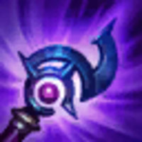
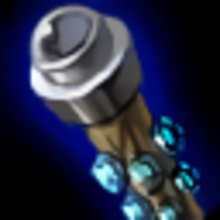
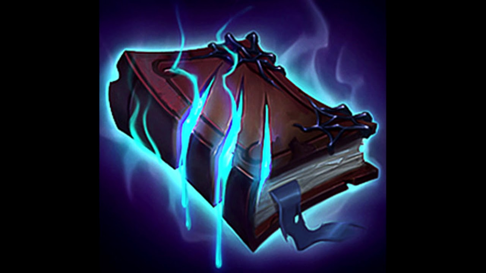
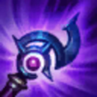
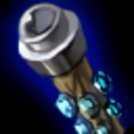
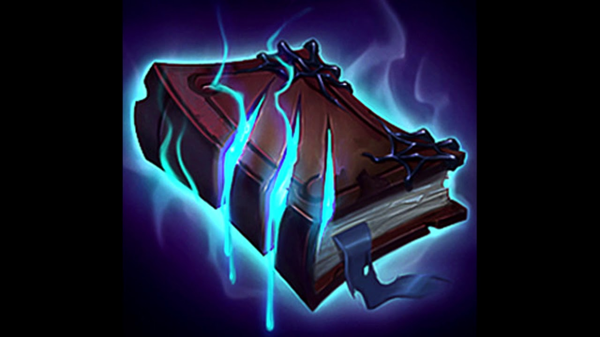

Lux
Example Lux Build
|  Luden's |
 Zhonya's |
Rabadons |
 Void Sf. |
 Morello |
 Rylai's |
Videos for More Info and Gameplay!
© 2020 Kwame Ocran
Please click icon to navigate back to home
Example Lux Build
|  Luden's |
Zhonya's |
Rabadons |
 Void Sf. |
 Morello |
Rylai's |
Videos for More Info and Gameplay!
Examples: Talon, Akali
~Lux can thrive into matchups like this by abusing her range advantage and using it to zone and harass melee lane opponents
Examples: Veigar, Cassiopeia, Annie
~She can still do very well into matchups like this by again using her range advantage however her zone of control/danger zone becomes much smaller
Examples: Zed, Gankplank
~This is the bane of her existence, even though they're melee. Bullying them is not easy by any means due to them having abilities that have greater range. You want to dodge and build a little bit defense on your first or second back.
Examples: Xerath, Syndra, Ahri
~These matchups feel impossible. You must simply outplay and be better than your opponent as this type of champion counters you. You should do everything in your power to dodge attacks, and attempt to roam and find leads elsewhere.